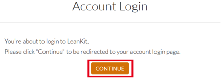

How to Configure SAML 2.0 for LeanKit
This setup might fail without parameter values that are customized for your organization. Please use the Okta Administrator Dashboard to add an application and view the values that are specific for your organization.
- Email the LeanKit support team and request that they enable SAML.
- Provide the following information:
- LeanKit will process your request. After receiving a confirmation email, you can start assigning people to the application.
- Done!
Notes:
SP-initiated flows are supported.
IdP-initiated flows and Just in Time (JIT) provisioning are not supported.
For SP-initiated flows:
- Go to https://<YourSubDomain>.leankit.com/Account/Membership/Login, where <yourSubDomain> is your LeanKit subdomain.
- Click Continue:
